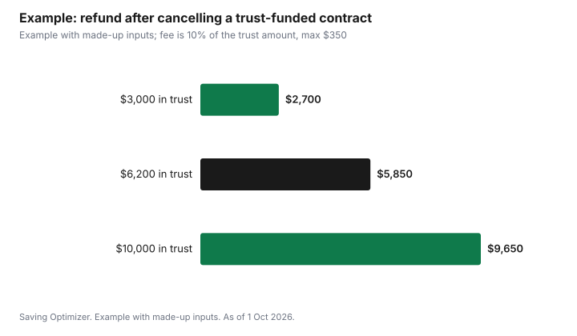

Events · Canada
Prepaid Funeral Plans in Ontario: Trust vs Insurance and Your Protections

In Ontario, you can preplan your funeral for free, and if you also prepay, the law protects your money. Prepayments are held either in trust, which by law must be in very safe investments, or through an insurance policy. Money paid to a licensed funeral establishment or transfer service is also backed by the Prepaid Funeral Services Compensation Fund. Since 1 July 2012, prepaid contracts must be guaranteed, so the provider cannot ask for more if prices rise. You can cancel at any time in writing: within 30 days of signing you get all your money back, and after that a provider may keep a fee of 10% of the amount in trust, up to $350.
Key takeaways
- Preplanning is free with most providers; prepaying is optional.
- Prepay through a trust (very safe investments) or insurance (two contracts).
- Licensed funeral establishments and transfer services are backed by the Prepaid Funeral Services Compensation Fund.
- Contracts since 1 July 2012 are guaranteed against price increases for what is included.
- Cancel in writing any time: full refund within 30 days; after that, a fee of up to 10% of the trust amount, maximum $350.
- Leftover money goes to your estate for most contracts.
- Example with made-up inputs: the cancellation math.
Preplanning versus prepaying
Preplanning means recording your wishes: burial or cremation, type of service, music, and where remains will go. Ontario's guidance says most service providers will keep a record of your plans without cost. Prepaying means signing a contract and paying now. Your estate trustee can change your plans at the time of death, so the province recommends discussing your wishes with them and with family.
| Feature | Preplan only | Prepay |
|---|---|---|
| Cost now | None with most providers | Full amount or instalments |
| Price protection | None | Guaranteed for included items since 1 Jul 2012 |
| Flexibility | Change any time | Cancel or change in writing; fees may apply after 30 days |
| Money protection | Not applicable | Trust rules or Insurance Act; compensation fund for licensed funeral and transfer providers |
Trust versus insurance
With a trust, you pay the provider and the money is held by a bank, trust company or independent trustee. It earns income over the years, which offsets price increases. By law, the provider may only hold it in very safe investments, and you are entitled to ask once a year where and how it is invested and how much is in your trust account.
With insurance, you buy a policy, sometimes through the provider's program, and pay the insurance company directly. You sign two contracts: the insurance policy and a contract with the provider, which makes sure the insurance money is used for the services you chose. The money is protected under the Insurance Act, and cancellation, fees and refunds depend on the insurance contract, which may have its own cooling-off period.
| Feature | Trust | Insurance |
|---|---|---|
| Who holds the money | Bank, trust company or independent trustee | Insurance company |
| Contracts | One prepaid contract | Insurance policy plus provider contract |
| Protection | Very safe investments required; compensation fund for licensed funeral or transfer providers | Insurance Act |
| Cancelling | Full refund within 30 days; after, fee up to 10% of trust amount, max $350 | Depends on the policy terms |
| Yearly information | You can ask where it is invested and the balance | Per the policy |
What the contract must show
- The purchaser's and recipient's names, and the provider's name.
- The supplies and services included and the total amount paid, with terms for any balance owing.
- Any commission or benefit the provider gets for recommending supplies or services.
- For interment, the location of the grave, crypt or niche, or where remains may be scattered.
Guaranteed contracts
Since 1 July 2012, all prepaid contracts in Ontario must be guaranteed: the provider cannot ask for more money if the cost of delivering the included supplies and services goes up. Your estate will still pay for anything requested at the time that was not in the contract, and any balance owing under the contract. For older, non-guaranteed contracts, your legal representative may have to pay more depending on the terms.
Leftover money
At the time of death, the cost is based on the current price list. If that cost is less than what you prepaid plus earned interest, the leftover money, including interest, goes to your estate or to a person named in the contract, for funeral or transfer service contracts signed on or after 1 June 1990 and cemetery or crematorium contracts signed on or after 1 April 1992.
Cancelling
You or your legal representative can cancel or change a prepaid contract at any time before the services or supplies are provided, by giving written notice to the provider. For contracts since 1 July 2012, cancelling within 30 days of signing gets all your money back. After 30 days, a provider may keep a cancellation fee of 10% of the amount in trust, up to $350. Refunds also depend on what has been paid and whether anything has already been provided.
The compensation fund
If you prepay with a licensed funeral establishment or transfer service, your money is protected by the Prepaid Funeral Services Compensation Fund administered by the Bereavement Authority of Ontario. The fund is used to return money in the rare cases where prepaid money is not available when it is needed. Check that the provider is licensed before you sign; the province says funeral establishment, cemetery, crematorium and transfer service operators must be licensed.
Is prepaying worth it?
Prepaying locks in prices for what is included and spares your family decisions and costs later. Against that, your money is committed, cancelling after 30 days costs up to $350, and you may move to another city. An alternative is to preplan for free and set aside savings in your own name, such as a TFSA, naming beneficiaries or making the estate trustee aware of it. The CPP death benefit of $2,500, or $5,000 in some cases, may also help your estate.
Example with made-up inputs
These numbers are an example with made-up inputs. Sam prepays $6,000 into a trust for a funeral contract. Two years later the trust holds $6,200 and Sam moves provinces and cancels in writing. The fee is the lesser of 10% of the amount in trust, $620, and $350, so the provider may keep $350 and Sam gets $5,850. Had Sam cancelled within 30 days of signing, the refund would have been the full $6,000. If Sam's trust held $3,000, the fee would be 10%, $300, and the refund $2,700.
| Amount in trust | 10% of trust | Fee (max $350) | Refund |
|---|---|---|---|
| $3,000 | $300 | $300 | $2,700 |
| $6,200 | $620 | $350 | $5,850 |
| $10,000 | $1,000 | $350 | $9,650 |

Steps
- Write down your wishes and share them with your estate trustee.
- Get price lists from licensed providers.
- Decide whether to prepay, and whether by trust or insurance.
- Read the contract for included items, commissions and cancellation terms.
- Keep copies with your will.
- Ask once a year for your trust statement.
Common mistakes
- Not telling family or the estate trustee about the contract.
- Assuming items not in the contract are covered.
- Cancelling by phone instead of in writing.
- Not checking the provider is licensed.
- Buying insurance without reading its cancellation terms.
Related: funeral costs and the CPP death benefit and cremation versus burial.
Sources
- Government of Ontario, Pre-plan and pre-pay final arrangements, ontario.ca, as of 1 Oct 2026.
- Government of Ontario, Your rights when arranging a funeral, ontario.ca, as of 1 Oct 2026.
- Government of Canada, CPP death benefit, canada.ca (Wayback copy), as of 1 Oct 2026.
- Trust and refund amounts in the example are made-up inputs.
Frequently asked questions
Can I preplan a funeral in Ontario without paying?
Yes. Ontario says you can preplan without prepaying, and most providers keep a record of your plans without cost.
How is prepaid funeral money protected in Ontario?
It is held in trust in very safe investments or through insurance under the Insurance Act, and prepayments to licensed funeral establishments or transfer services are backed by the Prepaid Funeral Services Compensation Fund.
Can I cancel a prepaid funeral contract in Ontario?
Yes, at any time in writing. Within 30 days you get all your money back; after that a provider may keep 10% of the amount in trust, up to $350.
Will my family pay more if prices go up?
Not for included items under contracts signed since 1 July 2012, which must be guaranteed.
What happens to leftover prepaid money?
It goes to your estate or a named person, for funeral contracts since 1 June 1990 and cemetery contracts since 1 April 1992.
Is a trust or insurance better for prepaying?
A trust lets you ask yearly where the money is; insurance involves two contracts and its own cancellation terms. Compare both.
Researched and drafted with AI assistance and fact-checked against official Canadian sources. How we create content.
Disclosure: Saving Optimizer may earn a commission if a partner link is added later. No partnership is claimed on this page. Education only.